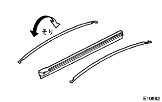
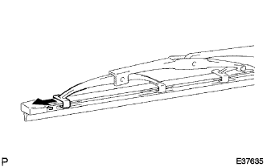

Waisher LH installation |
| 1. Installation of wiper rubber LH |
|  |
Attach the Waisabar Bucking Plate to the Waipliver LH.
|  |
Attach the wa parberal head (with a bulge) so that it faces the arm axis side.
Push it strongly to completely match the blade's portion on the wipliver edge.
| 2. Front wipblade LH installation |